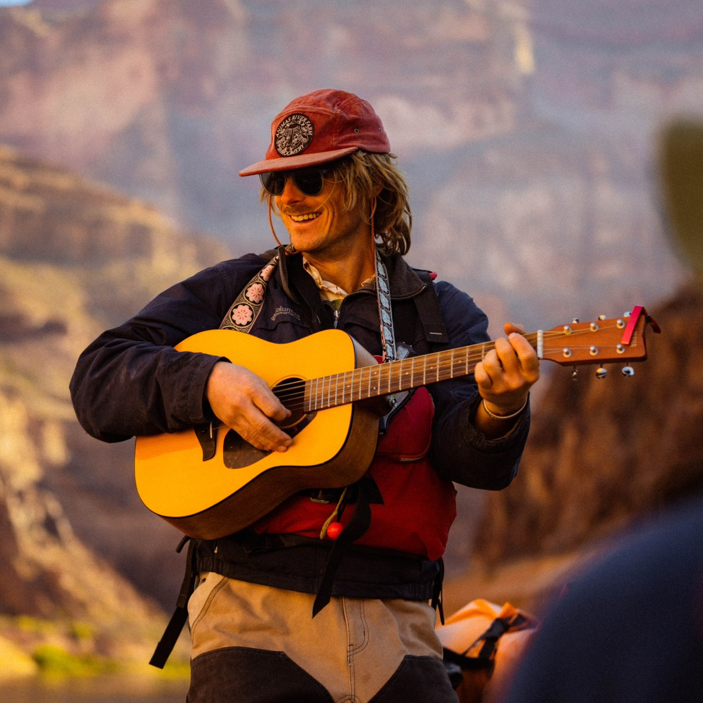
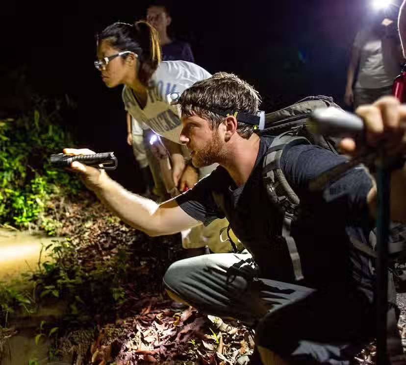
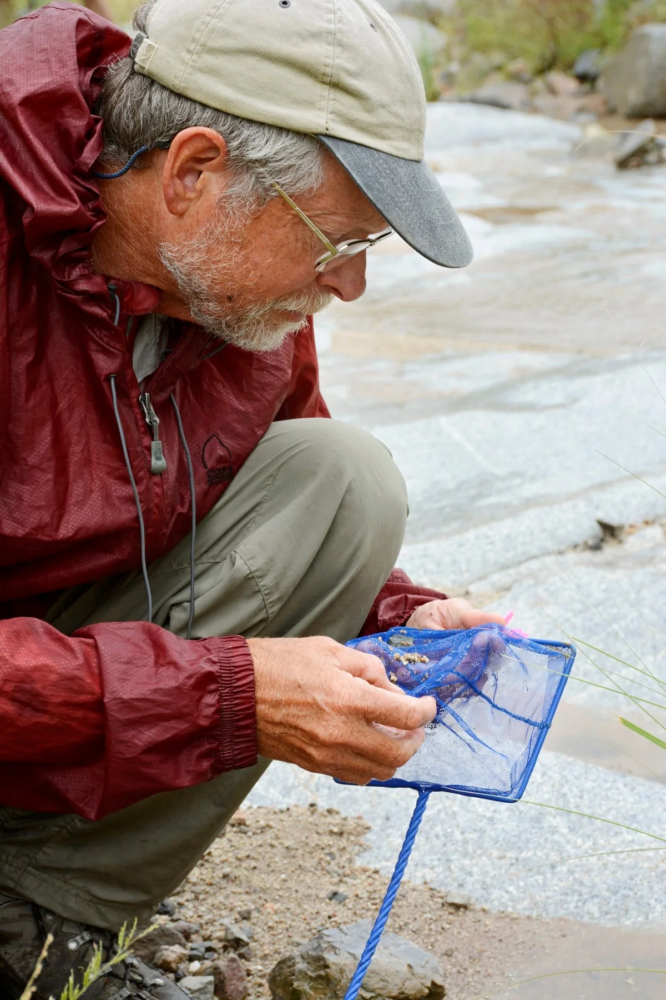
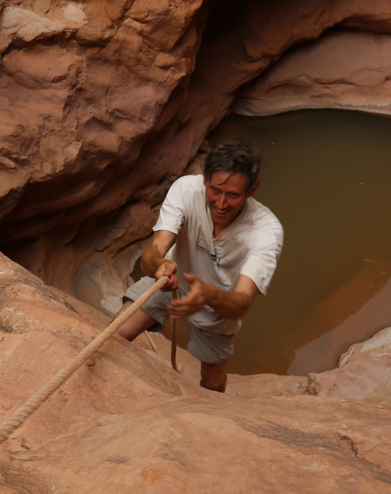

Joseph Holway, Ph.D.
North America · Global
Springs Ecology · Big Data Analysis
A growing international community advancing the understanding and conservation of springs worldwide.
Select a profile to learn more about each member, their region, and their areas of expertise.

North America · Global
Springs Ecology · Big Data Analysis
Southeast Asia · North America · Global
Freshwater Fish Conservation · Community-Based Conservation · Conservation Partnerships

North America · Latin America · Guiana Shield · Global
Key Biodiversity Areas · Herpetology · Biodiversity Assessment · Conservation Prioritization

North America
Springs Ecology · Entomology
North America
Spring Fishes · Ichthyology

Global
Freshwater Fish Conservation · Systematic Ichthyology · Freshwater Biodiversity
Region: North America · Global
Expertise: Springs Ecology · Big Data Analysis
Email: joseph@springstewardship.org
Dr. Joseph Holway first worked with the Springs Stewardship Institute from 2015–2018 as a field technician before starting graduate school. He earned his PhD in Environmental Life Sciences from Arizona State University in 2024 and was a 2021 Fulbright Research Scholar in Cambodia. His dissertation research focused on hydrologic variance and food security in the Lower Mekong Basin. Born and raised in the Southwest, he developed an appreciation and curiosity for water, particularly in arid environments, and now works to advance the scientific understanding and stewardship of springs ecosystems globally.
Region: Southeast Asia · North America · Global
Expertise: Freshwater Fish Conservation · Community-Based Conservation · Conservation Partnerships
Email: cou@rewild.org
Dr. Chouly Ou serves as the Freshwater Fish Program Manager at Re:wild. In partnership with SHOAL, she advances freshwater fish conservation by working with communities, scientists, governments, corporations, and nonprofit organizations. Her experience spans freshwater ecology and community-based conservation in Cambodia’s Tonle Sap Lake and the Lower Mekong River Basin, as well as conservation grants, capacity building, teaching, and research.
Region: North America · Latin America · Guiana Shield · Global
Expertise: Key Biodiversity Areas · Herpetology · Biodiversity Assessment · Conservation Prioritization
Email: asnyder@rewild.org
Dr. Andrew Snyder serves as Re:wild’s Key Biodiversity Area Officer, supporting training, identification, reassessment, communication, and fundraising across the KBA Partnership. His research background centers on amphibians, reptiles, species diversity, and endemism, with extensive field experience in Guyana and Central America. He also uses photography and science communication to build stronger connections between people and biodiversity.
Region: North America
Expertise: Springs Ecology · Entomology
Email: larry@springstewardship.org
Dr. Larry Stevens is the Curator of Ecology at the Museum of Northern Arizona and Founding Director of the Springs Stewardship Institute. He received his Ph.D. in Zoology from Northern Arizona University in 1989 and served as ecologist for Grand Canyon National Park from 1989 to 1994. His research has focused extensively on biogeography, springs ecology, and the ecology of the Colorado Plateau.
Region: North America
Expertise: Spring Fishes · Ichthyology
Email: tobler@umsl.edu
Dr. Michi Tobler is a Professor of Biology at the University of Missouri–St. Louis and a Senior Scientist at the Saint Louis Zoo’s WildCare Institute. His research examines biological diversification and adaptation to extreme environments, including fishes inhabiting caves, hydrogen sulfide-rich springs, desert wetlands, and other groundwater-dependent ecosystems. His lab integrates genomic, ecological, and evolutionary approaches with applied conservation.
Region: Global
Expertise: Freshwater Fish Conservation · Systematic Ichthyology · Freshwater Biodiversity
Email: harrisonffsg@gmail.com
Dr. Ian Harrison obtained his Ph.D. in systematic ichthyology at the University of Bristol, UK. He has conducted research on marine and freshwater fishes from several parts of the world, including fieldwork in Europe, Central and South America, West and Western Central Africa, the Philippines, and the Central Pacific. He was based at the American Museum of Natural History from 1996 to 2008, conducting research on systematic ichthyology and freshwater conservation biology, before working with Conservation International (CI) until 2024. He has served as the Technical Officer for the Freshwater Fish Specialist Group of IUCN’s Species Survival Commission (SSC), is part of the Steering Committee for SSC, and co-chair of the IUCN-SSC Freshwater Conservation Committee. He is an Adjunct Professor for the School of Earth and Sustainability, Northern Arizona University. He is currently based in Flagstaff, Arizona.